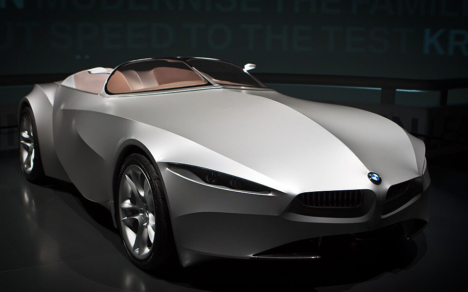

Design language
The GINA is defined by soft, sculpted form and an unusually minimal visual structure. It feels less like a conventional car and more like a design experiment in motion.

Experimental Design
The BMW GINA explores a highly experimental idea of automotive form, using fluid surfaces and an unconventional body concept to challenge traditional car design.
The GINA is defined by soft, sculpted form and an unusually minimal visual structure. It feels less like a conventional car and more like a design experiment in motion.
It challenges assumptions about how a vehicle body should look and behave. That radical thinking makes it one of the most memorable concepts in the entire collection.
On the homepage, the BMW works especially well as a premium visual anchor because its clean silver form reads clearly and immediately in the accordion layout.